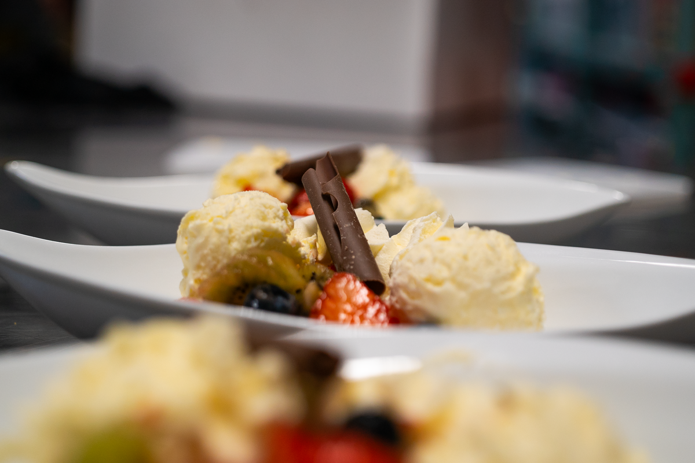
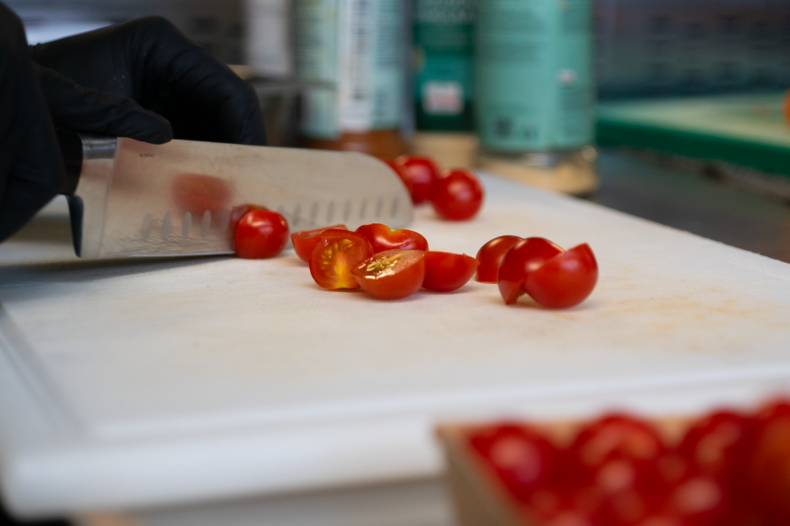
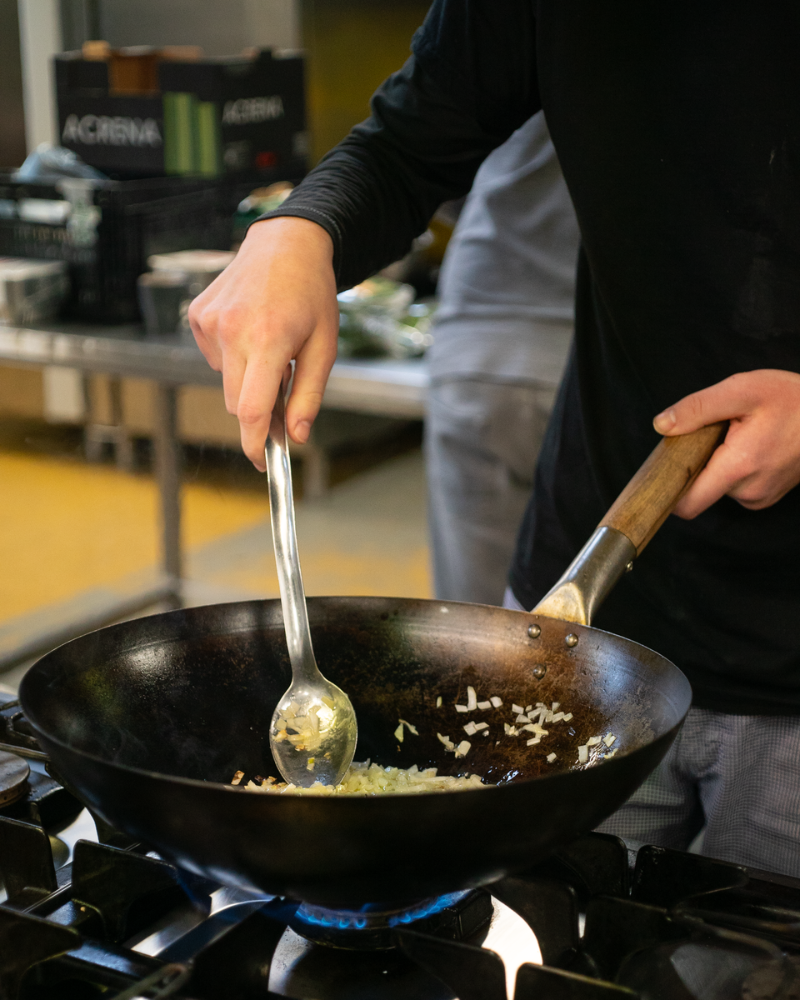

Op zoek naar een restaurant/cateraar in Weert voor een verse en betaalbare maaltijd? Bij Restaurant ‘Eten wat de pot schaft’ van Kr8tig ben je welkom voor een lunch, een warm gerecht of een goed belegd broodje. Je kunt rustig plaatsnemen in het restaurant en genieten van de dagverse lunch die wordt geserveerd.
In ons restaurant werken deelnemers die ergens anders zijn vastgelopen. Hier krijgen zij de kans om opnieuw te beginnen, midden in de praktijk van de horeca. Ze zijn dagelijks bezig met het bereiden van maaltijden en andere dagverse producten, onder begeleiding van vakkundige koks en begeleiders.
Tijdens het werk leren ze niet alleen koken, maar ook samenwerken, plannen, verantwoordelijkheid nemen en omgaan met gasten. Stap voor stap ontdekken ze wat ze kunnen en bouwen ze aan hun zelfvertrouwen en zelfstandigheid.
De keuken staat in directe verbinding met het restaurant. Terwijl jij aan tafel zit, zie je hoe jouw lunch wordt bereid. Je ruikt verse ingrediënten, hoort het werken in de keuken en ervaart hoe alles met aandacht wordt gemaakt. Die openheid maakt een bezoek aan ons restaurant in Weert net even anders dan een standaard eetgelegenheid.
Het menu wisselt dagelijks. We werken niet met een vaste kaart, maar met vers bereide gerechten die elke dag anders zijn. Je kunt bij ons terecht voor onder andere:
Wil je genieten van een verse lunch in Weert en tegelijk bijdragen aan de ontwikkeling van onze deelnemers? Kom dan langs bij het restaurant van Kr8tig aan de Parallelweg 168.
Neem plaats, kijk rond en ervaar wat hier elke dag gebeurt. Reserveren kan via t.vandersanden@kr8tig.nl. Wij zijn geopend van maandag t/m vrijdag van 09.00 tot 16.00 uur.
Reserveer een tafel